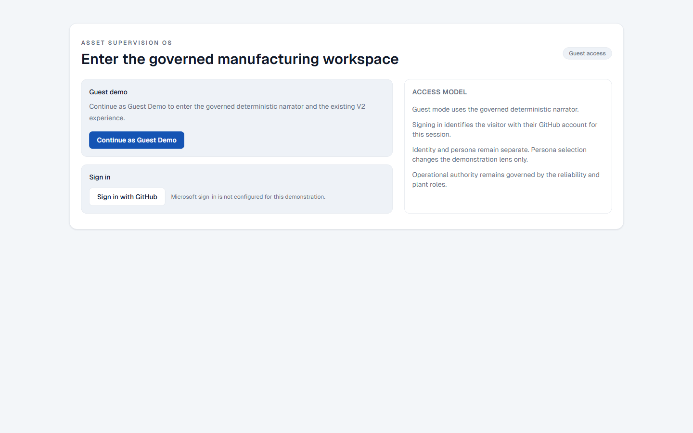
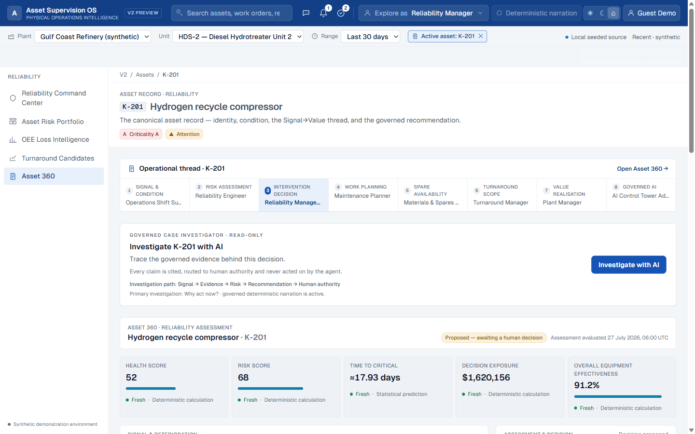

Fragmented signals
Condition evidence, production loss and asset context arrive in different systems and at different times.
Asset Supervision OS connects reliability evidence, intervention planning, materials, turnaround and value—while keeping operational authority with accountable plant roles.
The public implementation repository exposes the product architecture, evidence, tests and release history for technical review.
Synthetic source records; deterministic and reproducible calculations, seed assertions, scores and K-201 goldens.
Asset-intensive organizations already have signals, work orders, inventory and planning systems. The operational failure is the broken thread between evidence, accountable decisions and executable work.
Condition evidence, production loss and asset context arrive in different systems and at different times.
Risk, lead time, turnaround timing and financial exposure are rarely reconciled in one governed decision view.
Reliability, maintenance, materials, turnaround and plant leadership need one case with explicit ownership—not unrelated dashboards.
The hydrogen recycle compressor case retains plant, unit, asset, time, evidence, work and authority context as it moves through accountable roles.


Asset OS connects Signal → Evidence → Risk → Intervention → Planning → Materials → Turnaround → Value → Human Authority.
The demonstration data is synthetic; the calculations, seed assertions, scores and K-201 goldens are deterministic and reproducible.
Models may replace only validated narrative prose. Deterministic engines and accountable humans retain decision authority.
The boundary uses volatile credential memory, masked uncontrolled input, authenticated same-origin mediation, pinned endpoints and deterministic fallback.
Eight personas remain anchored in the same K-201 case, with role-specific context and authority.
Decision exposure, time to critical, OEE and the deterministic value pathway are visible and separately governed.
The Case Investigator is read-only. Recommendations are governed records and operational actions require explicit human approval.
NVIDIA, OpenRouter, OpenAI and Anthropic use server-authoritative adapters with explicit selection and no silent paid-provider fallback.
Capabilities below are explicitly marked Live, contract-tested, deterministic fallback or planned.
The public repository and this narrative expose architecture, security, evidence, QA totals and truthful limitations.
A provider may rewrite only validated Case Investigator prose. Every material claim must remain grounded in server-authoritative citations.
Telemetry, risk, health, confidence, time to critical, OEE, exposure, value, citations, recommendations or timestamps.
Reliability Manager approval and Plant Manager endorsement remain governed acts outside model control.
Invalid, unavailable or ungrounded model output restores deterministic narration with truthful fallback provenance.
BYOK is a credential mode, not a provider. The browser never calls generation providers directly, and only one explicitly tested provider can be active at a time.
nvidia/nemotron-3.5-lightning-30b-a3b
openai/gpt-oss-20b:free
gpt-4.1-mini returned governed deterministic fallback during final live acceptance.
claude-haiku-4-5-20251001
Credentials remain in volatile browser-session memory only. Testing never connects automatically. Switching, disconnecting, reloading, signing out and drawer cleanup erase sensitive state. Provider billing, quotas and data handling remain governed by the user’s provider account.
Identity and persona are separate. Persona selection changes the demonstration lens; it never grants operational authority.
Guest Demo, GitHub authentication, eight operational personas, K-201, deterministic engines and Provider Centre.
Request contracts, allowlists, lifecycle, sanitization, timeout, fallback and no-direct-browser-provider behavior.
Provider failure or rejected output cannot remove the governed investigation path.
OpenRouter OAuth/PKCE, Azure, DGX, Microsoft authentication, additional providers and production industrial integrations.
Final release QA: 1,219/1,219 tests, HTTP 98/98, Playwright shell 417/417, focused multi-provider browser QA 599/599 and hardening 20/20. The demonstration is not a claim of autonomous control or production plant integration.
Start without credentials in Guest Demo, then follow K-201 from signal and deterministic evidence through recommendation, work readiness, value and human authority.